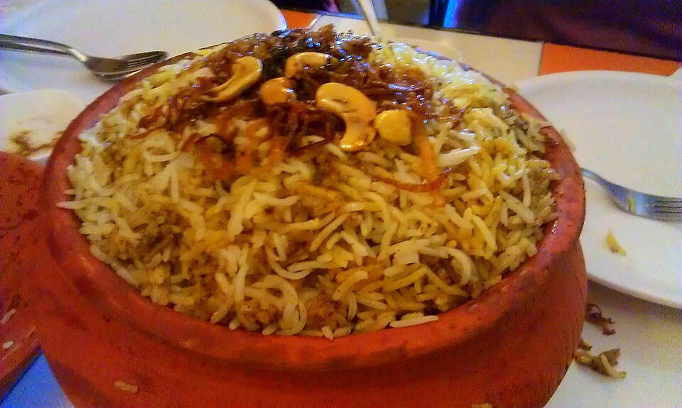
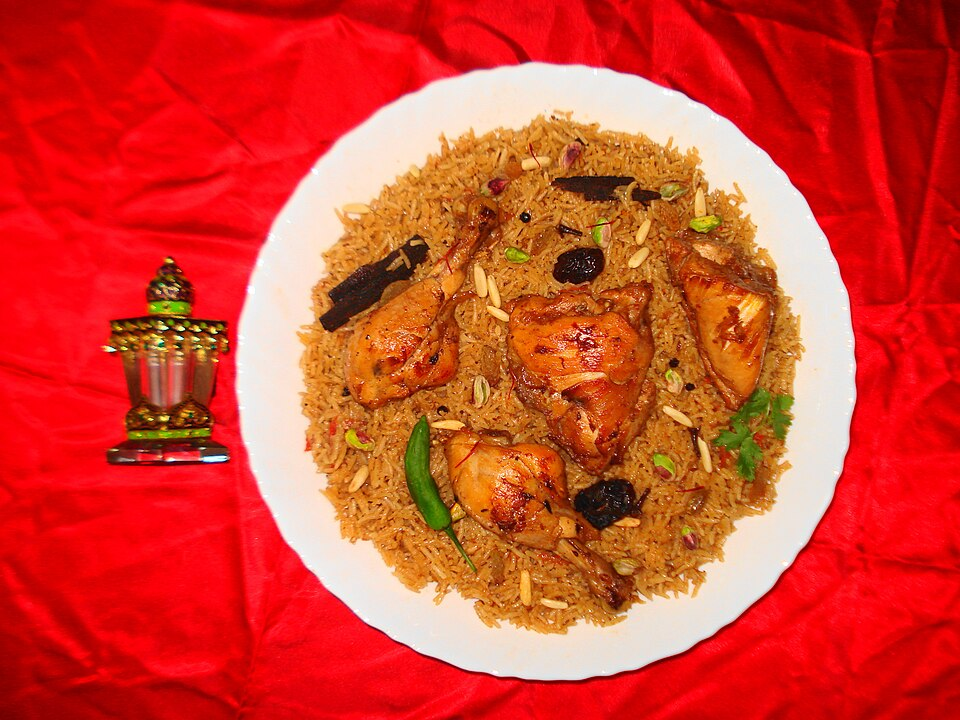
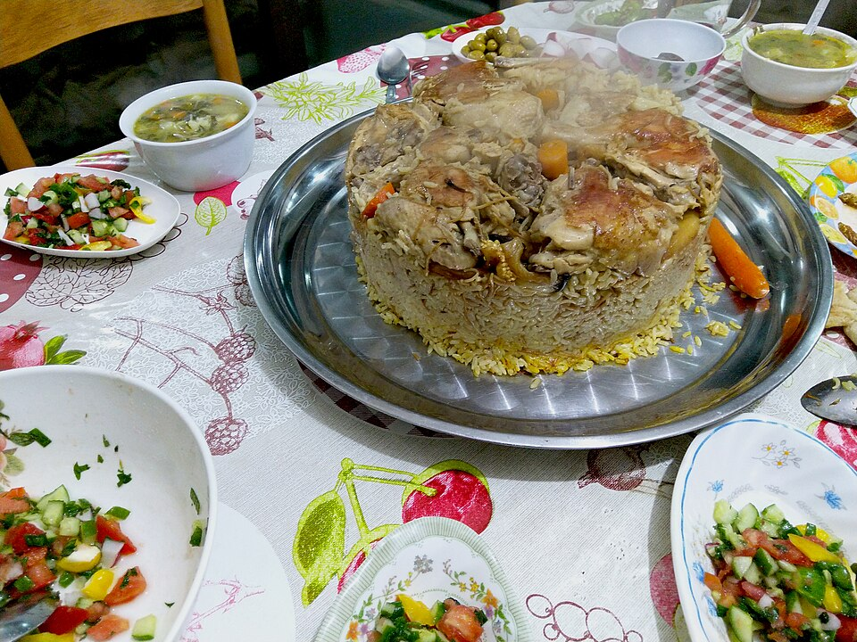
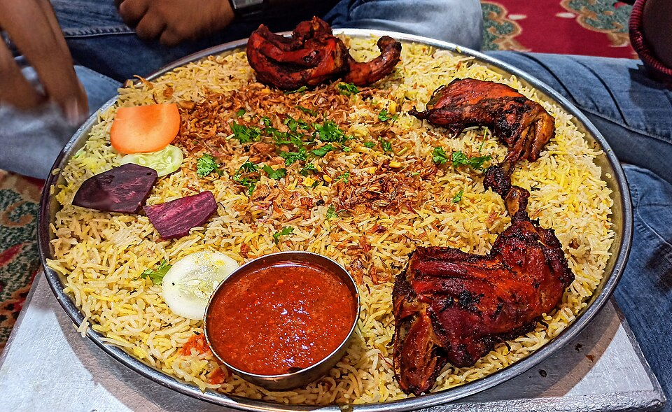
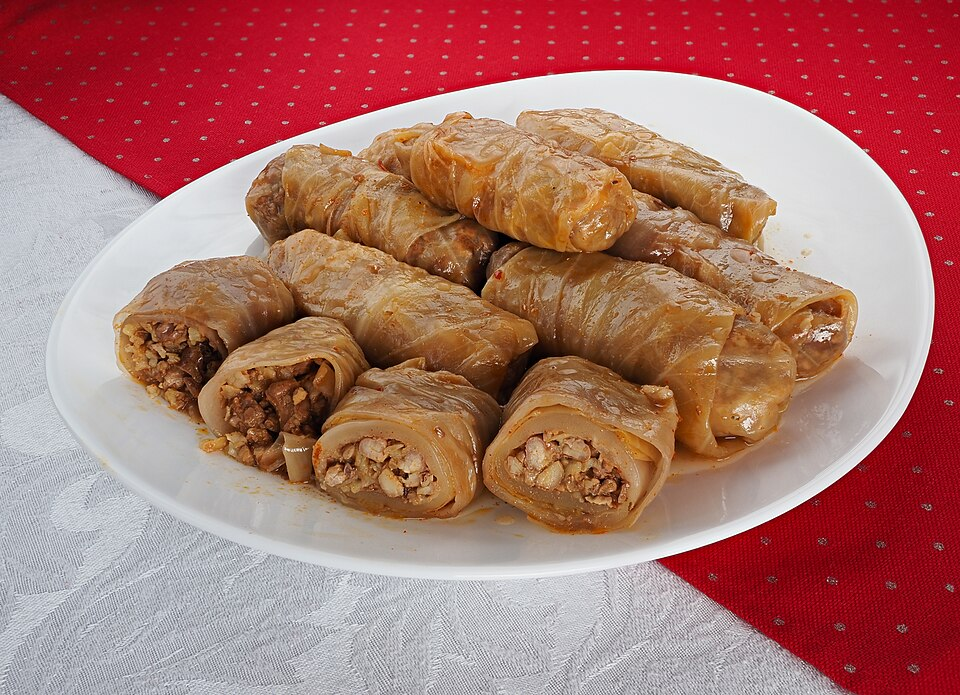

Family Cookbook · Cooking Guide
Al Maysari
Family Kitchen
دليل الطبخ لعائلة الميسري
23 main dishes, 9 salads and 5 fruit preparations. Every recipe has exact quantities for 1 or 2 persons, step-by-step method, Tagalog reminders and a QR code to a cooking video.






Prepared for the household helper · English + TagalogAbu Dhabi · October 2026
House Rules of the Kitchen
Read this page first. These rules apply to every recipe. · قواعد المطبخ
⚠️ Einas (Madam) – ALWAYS
- NO spicy food. No chili, no hot sauce, no "medium". Mild only.
- NO regular milk or cream. Use OAT milk or lactose-free milk/cheese only.
- NO beans / legumes (lobia, chickpeas, lentils, foul).
- NO seafood or fish.
- Chicken is her meat. Lamb or beef dishes: cook her a chicken version or a salad with grilled chicken.
- She is pregnant: food must be fully cooked (no pink chicken, no runny eggs), fresh, and clean.
Tagalog: Walang maanghang, walang regular na gatas, walang beans, walang isda. Manok lang. Lutong-luto lahat.
👨💼 Mohamed (Sir)
- All cuisines. Chicken, lamb and beef.
- Does NOT eat: foul (fava beans), mujaddara, seafood.
- Likes: fresh juice, fresh fruit. No bread with breakfast.
- Spice level: mild to medium. Chili sauce on the side, never mixed in.
📏 Quantities
- Every table has two columns: 1 person and 2 persons. Use the column that was requested that day.
- 1 cup = 250 ml. 1 tbsp = 15 ml. 1 tsp = 5 ml. Use the measuring cups and spoons in the drawer, not a random glass.
- Rice: always wash 3 times until the water is clear, then soak 20-30 min.
- Dinner portions are half of lunch portions unless told otherwise.
Gamitin ang measuring cup at kutsara. Huwag tantiyahin.
🔥 Cooking basics
- Onion "golden": medium heat 8-12 min, stir often. Brown = good. Black = throw away and start again.
- Chicken is cooked when juices run CLEAR and no pink near the bone (74 °C).
- Lamb is ready only when a fork goes in easily. If hard, cook longer with a little water.
- Rice: after adding water, boil 2 min, then cover and LOWEST heat, no stirring, no opening.
- Taste the food before serving. Salt is added in small steps.
Tikman bago ihain. Asin paunti-unti.
🧼 Hygiene & safety
- Wash hands before cooking and after touching raw chicken or meat.
- Separate board and knife for raw meat and for vegetables.
- Cool food before closing any lunch box. Sauces in a separate small box.
- Leftovers: into the fridge within 1 hour, in a closed container, labelled with the day.
📱 Videos (QR codes)
- Every recipe has a QR code at the bottom. Open the camera on the phone, point at the code, tap the link.
- Green label = Tagalog video. Blue label = English video.
- Watch the video ONCE fully before cooking the dish for the first time. Then follow the written recipe in this book for quantities.
- If something is unclear, ask BEFORE cooking, not after.
Panoorin ang video nang buo bago magluto sa unang beses. Magtanong bago, hindi pagkatapos.
Contents
23 main dishes · 9 salads · 5 night fruit preparations
Main dishes
- 01Chicken BiryaniTAبرياني دجاج
- 02Lamb BiryaniENبرياني لحم
- 03Chicken MaqlubaENمقلوبة دجاج
- 04Lamb MaqlubaENمقلوبة لحم
- 05Yellow Rice with Peri-Peri Chicken (Nando's style)TAأرز أصفر مع دجاج بيري بيري
- 06Lamb KabsaTAكبسة لحم
- 07Chicken KabsaTAكبسة دجاج
- 08Chicken Bukhari RiceENرز بخاري بالدجاج
- 09Lamb Bukhari RiceTAرز بخاري باللحم
- 10Chicken Curry with Boiled EggsENكاري دجاج مع بيض مسلوق
- 11Chicken with Vegetables in the OvenTAدجاج بالخضار في الفرن
- 12Chicken SalonaTAصالونة دجاج
- 13Lamb SalonaTAصالونة لحم
- 14Mahshi Malfouf (Stuffed Cabbage Rolls)TAمحشي ملفوف
- 15Cajun Chicken with Lobia (Black-eyed Peas) and White RiceENدجاج كاجن مع لوبيا ورز أبيض
- 16Grilled Chicken with Molokhia and White RiceTAدجاج مشوي مع ملوخية ورز
- 17Okra (Bamia) with Lamb and White RiceTAبامية باللحم مع رز
- 18Fried Chicken with Okra Stew and White RiceTAدجاج مقلي مع بامية ورز
- 19Musakhan Chicken with White Rice (Oven)TAمسخن دجاج بالرز
- 20Spaghetti with MeatballsENسباغيتي بكرات اللحم
- 21Mashed Potato with Grilled ChickenENبطاطس مهروسة مع دجاج مشوي
- 22Chicken with Spinach and White RiceENدجاج بالسبانخ مع رز
- 23Madhbi Chicken with RiceENدجاج مظبي مع رز
Salads
- S1Fattoush SaladENسلطة فتوش
- S2Walnut SaladENسلطة الجوز
- S3Corn SaladENسلطة الذرة
- S4Burghul (Bulgur) Salad / TabboulehENسلطة برغل / تبولة
- S5Green Mix SaladTAسلطة خضراء مشكلة
- S6Greek SaladENسلطة يونانية
- S7Caesar Salad with Grilled ChickenENسلطة سيزر بالدجاج
- S8Halloumi SaladENسلطة حلوم
- S9Jarjeer (Rocket) SaladTAسلطة جرجير
Night fruit preparation
See the last page: five fruit combinations, three kinds each, prepared the night before.
Salads
Fresh, cut right before serving. Dressing always separate for lunch boxes. · السلطات
Fattoush Salad سلطة فتوش
⏱ 20 min
| Ingredient | 1 person | 2 persons |
|---|
| Romaine lettuce, chopped | 2 cups | 4 cups |
| Tomato, diced | 1 | 2 |
| Cucumber, diced | 1/2 | 1 |
| Radish, sliced | 2 | 4 |
| Spring onion / onion | 1 tbsp | 2 tbsp |
| Fresh mint + parsley | 2 tbsp | 4 tbsp |
| Arabic bread, toasted or fried until crisp | 1/2 | 1 |
| Dressing: lemon juice 1.5 tbsp, olive oil 2 tbsp, sumac 1 tsp, pomegranate molasses 1 tsp, garlic, salt | 1 set | 2 sets |
- Toast bread in oven 180 C until crisp, break into pieces.
- Mix all vegetables and herbs in a bowl.
- Whisk dressing. Add dressing and bread only at serving time.
Mahalagang paalala (Tagalog)- Tinapay at dressing: ilagay bago ihain lang, para hindi malata.
![QR]() EnglishThe best fattoush salad - Feel Good Foodie
EnglishThe best fattoush salad - Feel Good Foodie
Walnut Salad سلطة الجوز
⏱ 15 min
| Ingredient | 1 person | 2 persons |
|---|
| Mixed green leaves | 2 cups | 4 cups |
| Apple, sliced thin | 1/2 | 1 |
| Walnuts, toasted | 3 tbsp | 6 tbsp |
| Pomegranate seeds or dried cranberries | 2 tbsp | 4 tbsp |
| Feta (lactose-free for Einas) | 2 tbsp | 4 tbsp |
| Dressing: balsamic vinegar 1 tbsp, olive oil 2 tbsp, honey 1 tsp, salt | 1 set | 2 sets |
- Toast walnuts in a dry pan 3 min.
- Toss leaves, apple, pomegranate.
- Add walnuts, feta, dressing just before serving.
Mahalagang paalala (Tagalog)- Apple: hiwain bago ihain lang (umiitim).
![QR]() English10-Minute Apple Walnut Salad - Broke Bank Vegan
English10-Minute Apple Walnut Salad - Broke Bank Vegan
Night Fruit Preparation
Every night, prepare 3 kinds of fruit for the next day. Rotate the combinations below. · تحضير الفواكه ليلاً
1
Banana + Apple + Watermelon
Saging + Mansanas + Pakwan
Peel and slice banana; slice apple with skin, drizzle lemon; watermelon in cubes, remove seeds.
2
Kiwi + Rockmelon + Orange
Kiwi + Melon + Orange
Peel and slice kiwi; rockmelon in cubes, no seeds; orange peeled and cut in segments, no white pith.
3
Pears + Mango + Banana
Peras + Mangga + Saging
Pear sliced with skin + lemon; mango peeled and cubed; banana sliced last.
4
Watermelon + Rockmelon + Kiwi
Pakwan + Melon + Kiwi
All in cubes, equal sizes, no seeds.
5
Apple + Kiwi + Mango
Mansanas + Kiwi + Mangga
Apple slices with lemon; kiwi peeled and sliced; mango cubed.
Mahalagang paalala (Tagalog)
- Hugasan lahat ng prutas. Alisin ang buto. Pantay-pantay ang hiwa.
- Mansanas, peras at saging: hiwain sa umaga o lagyan ng lemon para hindi umitim.
- Ilagay sa saradong lalagyan sa ref. Hiwalay na lalagyan bawat tao.
- Pakwan at melon: alisin lahat ng buto.
Photo credits
Photos of real home-cooked dishes from Wikimedia Commons (free licenses) and stills from the linked cooking videos. Other photos: Pexels.
- 1 Chicken Biryani: Wikimedia Commons, Shivani shipra (CC BY-SA 4.0)
- 1 Chicken Biryani: Wikimedia Commons, Dheerajk88 (CC BY-SA 4.0)
- 1 Chicken Biryani: Video: Simple Chicken Biryani (Pinoy Style) - Maine Cooks
- 2 Lamb Biryani: Wikimedia Commons, Shyamveer.singh1982 (CC BY-SA 4.0)
- 2 Lamb Biryani: Wikimedia Commons, Miansari66 (CC0)
- 2 Lamb Biryani: Video: Arabic Mutton Biryani - Food Fusion
- 3 Chicken Maqluba: Wikimedia Commons, Ramadan9044 (CC BY-SA 4.0)
- 3 Chicken Maqluba: Wikimedia Commons, تالا (CC BY-SA 4.0)
- 3 Chicken Maqluba: Video: How to make Chicken Maqluba - Recipes are Simple
- 4 Lamb Maqluba: Wikimedia Commons, Ramadan9044 (CC BY-SA 4.0)
- 4 Lamb Maqluba: Wikimedia Commons, Bazel (CC BY-SA 3.0)
- 4 Lamb Maqluba: Video: Maqluba with Lamb - Cooking Gorgeous
- 5 Yellow Rice with Peri-Peri Chicken (Nando's style): Wikimedia Commons, Vis M (CC BY-SA 4.0)
- 5 Yellow Rice with Peri-Peri Chicken (Nando's style): Wikimedia Commons,
Kolforn (Kolforn)
I'd appreciate if you could mail me (Kolforn@gmail.com) if (CC BY-SA 4.0)
- 5 Yellow Rice with Peri-Peri Chicken (Nando's style): Video: Roasted Peri-Peri Chicken with Yellow Rice - Chef RV Manabat
- 6 Lamb Kabsa: Wikimedia Commons, Miansari66 (CC0)
- 6 Lamb Kabsa: Wikimedia Commons, Smr iron (CC BY-SA 4.0)
- 6 Lamb Kabsa: Video: How to cook Saudi Kabsa Lamb (Tagalog) - madam kikay cooking
- 7 Chicken Kabsa: Wikimedia Commons, Smr iron (CC BY-SA 4.0)
- 7 Chicken Kabsa: Wikimedia Commons, Basel15 at en.wikipedia (Public domain)
- 7 Chicken Kabsa: Video: Kabsa Rice with Chicken (Saudi / Tagalog) - Yamyam Arabicfood
- 8 Chicken Bukhari Rice: Wikimedia Commons, Miansari66 (CC0)
- 8 Chicken Bukhari Rice: Video: Bukhari Rice with Chicken - The cookbook
- 9 Lamb Bukhari Rice: Wikimedia Commons, Artacoana (Public domain)
- 9 Lamb Bukhari Rice: Wikimedia Commons, Miansari66 (CC0)
- 9 Lamb Bukhari Rice: Video: Bukhari Rice with Lamb (Tagalog) - Rebecca Cooking Channel
- 10 Chicken Curry with Boiled Eggs: Wikimedia Commons, SnapMeUp (CC BY-SA 4.0)
- 10 Chicken Curry with Boiled Eggs: Wikimedia Commons, Ceeseven (CC BY-SA 4.0)
- 10 Chicken Curry with Boiled Eggs: Video: How to Cook Chicken Curry with Boiled Eggs - Enjoy Cooking with AL
- 11 Chicken with Vegetables in the Oven: Wikimedia Commons, Daderot (CC0)
- 11 Chicken with Vegetables in the Oven: Wikimedia Commons, Daderot (CC0)
- 11 Chicken with Vegetables in the Oven: Video: Filipino Style Roasted Chicken with Vegetables - Food Bae PH
- 12 Chicken Salona: Video: How to cook Chicken Salona - Marilou Recipes
- 12 Chicken Salona: Wikimedia Commons, Abu Isa (CC BY 4.0)
- 13 Lamb Salona: Video: How to cook Salona Laham - Marilou Recipes
- 13 Lamb Salona: Wikimedia Commons, Shaharbano (CC BY-SA 4.0)
- 14 Mahshi Malfouf (Stuffed Cabbage Rolls): Wikimedia Commons, Petar Milošević (CC BY-SA 4.0)
- 14 Mahshi Malfouf (Stuffed Cabbage Rolls): Wikimedia Commons, Shixart1985 (CC BY 2.0)
- 14 Mahshi Malfouf (Stuffed Cabbage Rolls): Wikimedia Commons, gran (CC BY-SA 3.0)
- 14 Mahshi Malfouf (Stuffed Cabbage Rolls): Video: How to make Cabbage Rolls / Malfouf - Kitchen with Sorayda
- 15 Cajun Chicken with Lobia (Black-eyed Peas) and White Rice: Video: Black-eyed beans (Lobia) Egyptian way
- 15 Cajun Chicken with Lobia (Black-eyed Peas) and White Rice: Wikimedia Commons, jeffreyw (CC BY 2.0)
- 15 Cajun Chicken with Lobia (Black-eyed Peas) and White Rice: Video: Easy Cajun Grilled Chicken - Simple Living with Ms Tania
- 16 Grilled Chicken with Molokhia and White Rice: Wikimedia Commons, Yosi I (CC BY 2.5)
- 16 Grilled Chicken with Molokhia and White Rice: Wikimedia Commons, Habib M'henni (CC BY-SA 4.0)
- 17 Okra (Bamia) with Lamb and White Rice: Wikimedia Commons, Benoît Prieur (CC0)
- 17 Okra (Bamia) with Lamb and White Rice: Wikimedia Commons, Tamorlan (CC BY-SA 3.0)
- 17 Okra (Bamia) with Lamb and White Rice: Video: Marag Bamya with Lamb - Angeline Canja
- 18 Fried Chicken with Okra Stew and White Rice: Video: Okra / Bamia with Chicken Salona - Marilou Recipes
- 18 Fried Chicken with Okra Stew and White Rice: Wikimedia Commons, Tamorlan (CC BY-SA 3.0)
- 18 Fried Chicken with Okra Stew and White Rice: Wikimedia Commons, Benoît Prieur (CC0)
- 19 Musakhan Chicken with White Rice (Oven): Wikimedia Commons, Alice Wiegand (CC BY-SA 4.0)
- 19 Musakhan Chicken with White Rice (Oven): Wikimedia Commons, Rotana Nawwaf Al Hasanat (CC BY-SA 4.0)
- 19 Musakhan Chicken with White Rice (Oven): Wikimedia Commons, Amaiursancho5 (CC BY-SA 4.0)
- 20 Spaghetti with Meatballs: Video: Easy Spaghetti and Meatballs - Preppy Kitchen
- 20 Spaghetti with Meatballs: Video: Spaghetti & Meatballs Pinoy Style (Tagalog) - Mommy-Go-Round
- 21 Mashed Potato with Grilled Chicken: Wikimedia Commons, Shark2025 (CC BY-SA 4.0)
- 21 Mashed Potato with Grilled Chicken: Wikimedia Commons, Pastorius (CC BY-SA 3.0)
- 21 Mashed Potato with Grilled Chicken: Wikimedia Commons, John Herschell (CC BY-SA 2.0)
- 22 Chicken with Spinach and White Rice: Wikimedia Commons, Sharnab neogi (CC BY-SA 4.0)
- 22 Chicken with Spinach and White Rice: Wikimedia Commons, Jeffrey_Allen (CC BY 2.0)
- 22 Chicken with Spinach and White Rice: Video: Spinach Chicken Curry (Palak Chicken) - Curries With Bumbi
- 23 Madhbi Chicken with Rice: Wikimedia Commons, Kavali Chandrakanth KCK (CC0)
- 23 Madhbi Chicken with Rice: Wikimedia Commons, Kavali Chandrakanth KCK (CC0)
- 23 Madhbi Chicken with Rice: Video: Arabic Style Chicken Madhbi - Cook with Alma
- S1 Fattoush Salad: Wikimedia Commons, Miansari66 (CC0)
- S1 Fattoush Salad: Wikimedia Commons, Arousing Appetites (CC BY-SA 3.0)
- S4 Burghul (Bulgur) Salad / Tabbouleh: Wikimedia Commons, cyclonebill (CC BY-SA 2.0)
- S5 Green Mix Salad: Wikimedia Commons, Horacio Cambeiro (CC BY-SA 3.0)
- S6 Greek Salad: Wikimedia Commons, https://www.flickr.com/photos/zone41/ (CC BY 2.0)
- S6 Greek Salad: Wikimedia Commons, Khaled (CC BY-SA 4.0)
- S7 Caesar Salad with Grilled Chicken: Wikimedia Commons, Prayitno / Thank you for (12 millions +) view from Los Angeles, USA (CC BY 2.0)
- S7 Caesar Salad with Grilled Chicken: Wikimedia Commons, Daderot (CC0)
- S8 Halloumi Salad: Wikimedia Commons, Khaled (CC BY-SA 4.0)
![QR]()
![QR]()
![QR]()
![QR]()
![QR]()
![QR]()
![QR]()

![QR]()
![QR]()
![QR]()
![QR]()
![QR]()
![QR]()
![QR]()
![QR]()
![QR]()
![QR]()


![QR]()
![QR]()
![QR]()
![QR]()
![QR]()
![QR]()
![QR]()
![QR]()
![QR]()


![QR]()

![QR]()

![QR]()

![QR]()

![QR]()

![QR]()

![QR]()